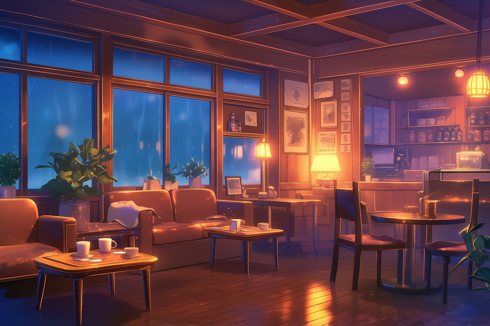
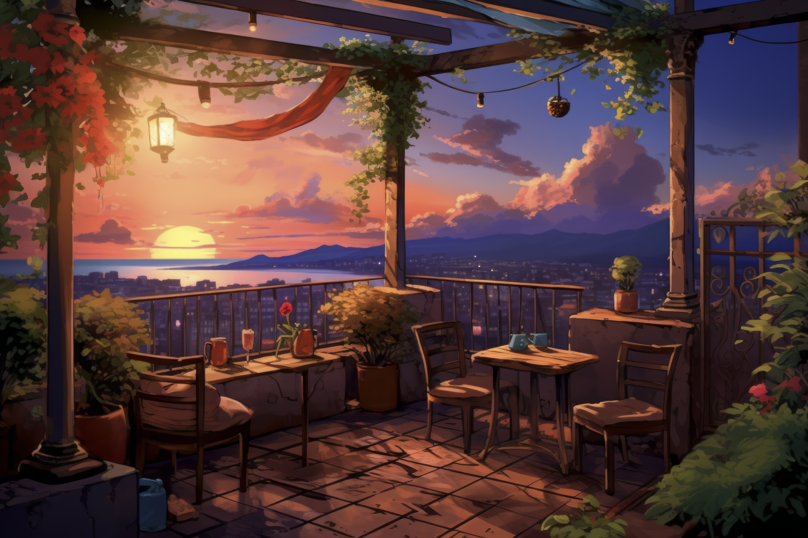

Kunjungi outlet Senja Coffee terdekat.
Nikmati suasana yang nyaman dengan fasilitas lengkap yang dirancang khusus untuk waktu santai dan produktifmu.

Jl. Mencari Cinta Sejati No. 99, Pusat Kota Pontianak. Area indoor yang sejuk dan bikin betah seharian.
LIHAT DI PETA →
Jl. Antek Antek Asing No. 2, Kubu Raya. Area luas dengan konsep semi-outdoor.
LIHAT DI PETA →© 2026 Senja Coffee Pontianak. Didesain oleh Kristian Candra Dinata.